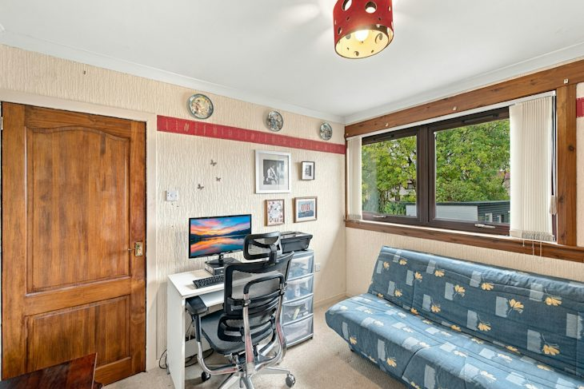
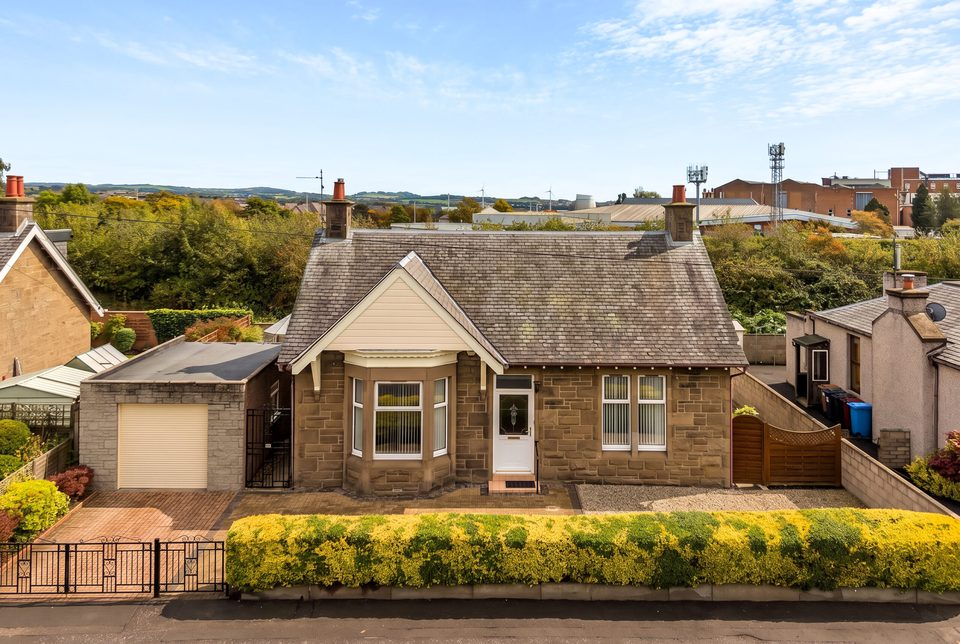
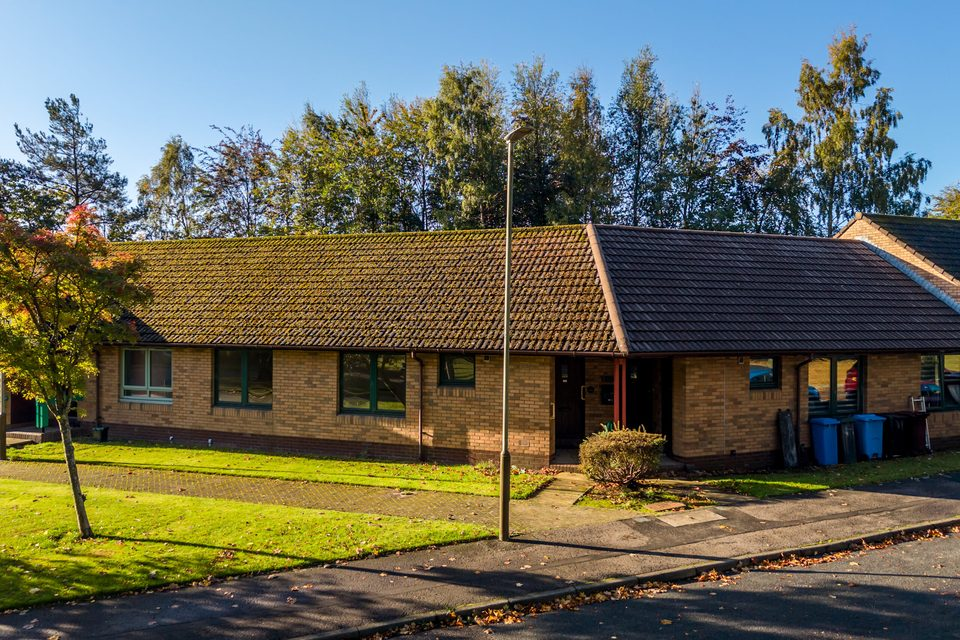
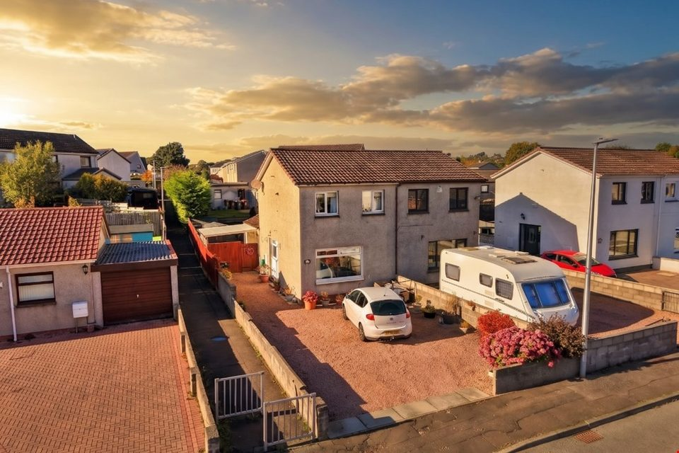
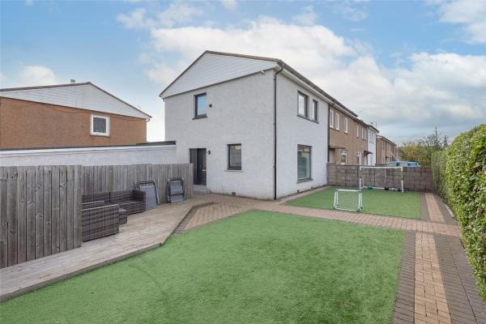
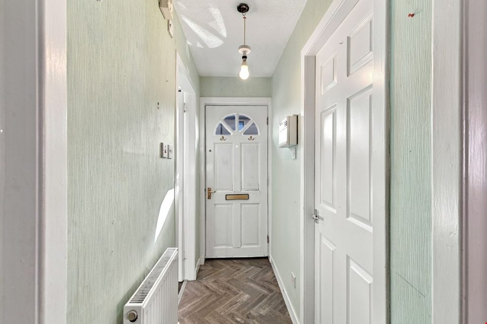
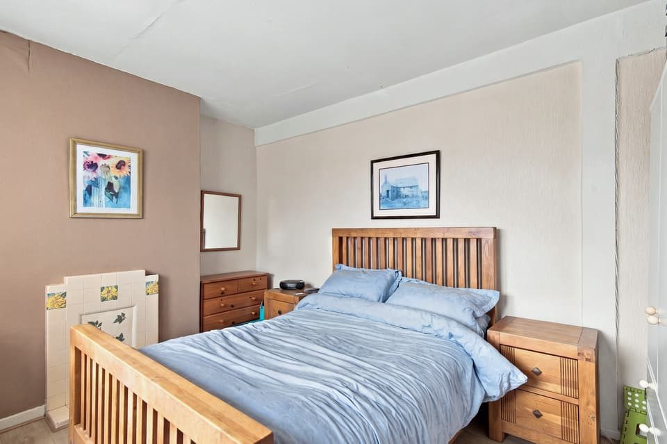

Top-floor flat2 bedrooms

£170,000Offers over
2/2, 207 Perth Road, Dundee
West End
Approx. 2.1 miles · 41 min walk from Tip Top
Listed 28 October 2026 · Rosie Fraser Real Estate
Daily property watch
Homes for sale · 2–3 bedrooms · Up to £270,000
Updated 29 October 2026 · 5 new · 3 price changes · 155 in the archive
West End
Approx. 2.1 miles · 41 min walk from Tip Top
Listed 28 October 2026 · Rosie Fraser Real Estate
West End
Walking distance unavailable
Listed 28 October 2026 · Rosie Fraser Real Estate
Original agent page unavailable; portal listing linked.

Area to confirm
Approx. 1.2 miles · 24 min walk from Tip Top
Listed 28 October 2026 · Your Move

Fairmuir
Approx. 0.2 miles · 3 min walk from Tip Top
Listed 2 October 2026 · Keystone Property
Previously reported · Price changed from £79,000 to £80,000

Stobswell
Approx. 1.1 miles · 21 min walk from Tip Top
Listed 21 September 2026 · Slater Hogg & Howison
Previously reported · Price changed from £89,000 to £85,000
Original agent page unavailable; portal listing linked.

Area to confirm
Walking distance unavailable
First seen 17 September 2026; listing date unavailable · Thorntons Property
Previously reported · Price changed from £215,000 to £210,000

St. Marys
Walking distance unavailable
First seen 29 October 2026; listing date unavailable · Lawson, Coull and Duncan

Area to confirm
Approx. 0.3 miles · 5 min walk from Tip Top
First seen 29 October 2026; listing date unavailable · Michael A Brown
Original agent page unavailable; portal listing linked.

Area to confirm
Approx. 3.5 miles · 69 min walk from Tip Top
Listed 27 October 2026 · Verdala
General modernisation required; described as a Betts Almond home.

Area to confirm
Approx. 0.5 miles · 11 min walk from Tip Top
Listed 27 October 2026 · Harmony Homes

Area to confirm
Approx. 0.6 miles · 14 min walk from Tip Top
Listed 27 October 2026 · Verdala

Area to confirm
Walking distance unavailable
Listed 27 October 2026 · Campbell Boath

Area to confirm
Approx. 1.6 miles · 32 min walk from Tip Top
First seen 28 October 2026; listing date unavailable · Gilson Gray

Area to confirm
Approx. 1.3 miles · 26 min walk from Tip Top
Listed 26 October 2026 · Verdala

Area to confirm
Approx. 1.8 miles · 37 min walk from Tip Top
Listed 23 October 2026 · Verdala
Advertised price buys a 25% ownership share within a development for purchasers aged 55 and over.

Area to confirm
Approx. 3.5 miles · 68 min walk from Tip Top
First seen 24 October 2026; listing date unavailable · Gilson Gray
Images may have been digitally enhanced for illustrative purposes.
Original agent page unavailable; portal listing linked.

St Marys
Approx. 2.3 miles · 46 min walk from Tip Top
First seen 24 October 2026; listing date unavailable · Lindsays
Non-traditional Blackburn construction; selling agent states it is not aware of lending restrictions.

Area to confirm
Approx. 0.7 miles · 14 min walk from Tip Top
First seen 24 October 2026; listing date unavailable · Gilson Gray
Advertised as two bedrooms throughout the main description; one feature bullet inconsistently mentions a further bedroom.
Original agent page unavailable; portal listing linked.

Area to confirm
Walking distance unavailable
First seen 24 October 2026; listing date unavailable · Thorntons
Cash purchase only: non-standard construction. Advertised as three bedrooms, with a separate dining room described as a possible fourth bedroom. Original listing date unavailable.

Area to confirm
Approx. 2.9 miles · 57 min walk from Tip Top
Listed 22 October 2026 · Axis Property
Original agent page unavailable; portal listing linked.